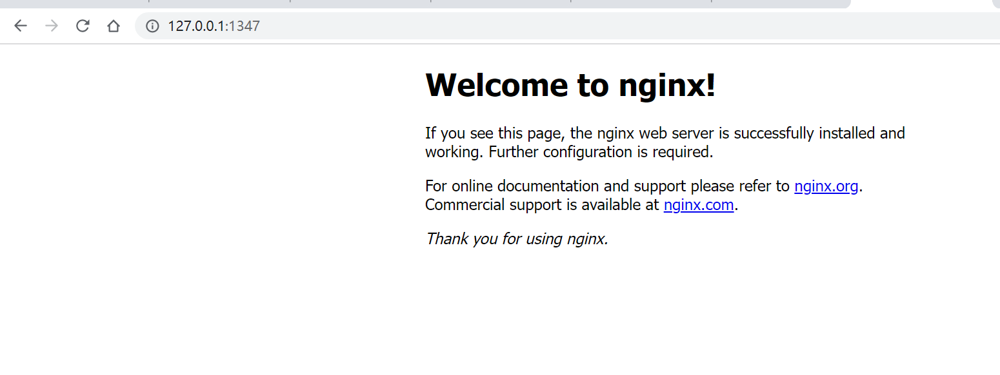

Docker 允许通过外部访问容器或容器互联的方式来提供网络服务。
Docker 网络
外部访问容器
容器中可以运行一些网络应用，要让外部也可以访问这些应用，可以通过 -P 或 -p 参数来指定端口映射。
当使用 -P 标记时，Docker 会随机映射一个端口到内部容器开放的网络端口。
使用 docker container ls 可以看到，本地主机的 32768 被映射到了容器的 80 端口。此时访问本机的 32768 端口即可访问容器内 NGINX 默认页面。
PS D:\hexoBlog> docker run -d -P nginx:alpine
27aa47874b6995822708fe578f96997f37f5fcbe5b3b1d4d3fb0d625936c65b6
PS D:\hexoBlog> docker container ls
CONTAINER ID IMAGE COMMAND CREATED STATUS PORTS NAMES
27aa47874b69 nginx:alpine "/docker-entrypoint.…" 15 seconds ago Up 15 seconds 0.0.0.0:32772->80/tcp friendly_thompson
PS D:\hexoBlog> docker container ls -l
CONTAINER ID IMAGE COMMAND CREATED STATUS PORTS NAMES
27aa47874b69 nginx:alpine "/docker-entrypoint.…" 21 seconds ago Up 20 seconds 0.0.0.0:32772->80/tcp friendly_thompson
PS D:\hexoBlog>同样的，可以通过 docker logs 命令来查看访问记录。
PS D:\hexoBlog> docker logs 27aa
/docker-entrypoint.sh: /docker-entrypoint.d/ is not empty, will attempt to perform configuration
/docker-entrypoint.sh: Looking for shell scripts in /docker-entrypoint.d/
/docker-entrypoint.sh: Launching /docker-entrypoint.d/10-listen-on-ipv6-by-default.sh
10-listen-on-ipv6-by-default.sh: info: Getting the checksum of /etc/nginx/conf.d/default.conf
10-listen-on-ipv6-by-default.sh: info: Enabled listen on IPv6 in /etc/nginx/conf.d/default.conf
/docker-entrypoint.sh: Launching /docker-entrypoint.d/20-envsubst-on-templates.sh
/docker-entrypoint.sh: Launching /docker-entrypoint.d/30-tune-worker-processes.sh
/docker-entrypoint.sh: Configuration complete; ready for start up
2023/04/04 14:12:54 [notice] 1#1: using the "epoll" event method
2023/04/04 14:12:54 [notice] 1#1: nginx/1.21.5
2023/04/04 14:12:54 [notice] 1#1: built by gcc 10.3.1 20211027 (Alpine 10.3.1_git20211027)
2023/04/04 14:12:54 [notice] 1#1: OS: Linux 5.10.16.3-microsoft-standard-WSL2
2023/04/04 14:12:54 [notice] 1#1: getrlimit(RLIMIT_NOFILE): 1048576:1048576
2023/04/04 14:12:54 [notice] 1#1: start worker processes
2023/04/04 14:12:54 [notice] 1#1: start worker process 32
2023/04/04 14:12:54 [notice] 1#1: start worker process 33
PS D:\hexoBlog>-p 则可以指定要映射的端口，并且，在一个指定端口上只可以绑定一个容器。支持的格式有 ip:hostPort:containerPort | ip::containerPort | hostPort:containerPort。
映射所有接口地址
使用 hostPort:containerPort 格式本地的 80 端口映射到容器的 80 端口，可以执行
PS D:\hexoBlog> docker run -d -p 80:80 nginx:alpine
9f272729128400aac8a098c63219094f1c5af8b98efb4ba99fc69a2fd9b4ad51此时默认会绑定本地所有接口上的所有地址。
映射到指定地址的指定端口
可以使用 ip:hostPort:containerPort 格式指定映射使用一个特定地址，比如 localhost 地址 127.0.0.1
PS D:\hexoBlog> docker run -d -p 127.0.0.1:80:80 nginx:alpine
da7caa7f8fb6604b338fe4e69140fb8a93fec7921a48dcb809b6be823e74ab13
PS D:\hexoBlog>映射到指定地址的任意端口
使用 ip::containerPort 绑定 localhost 的任意端口到容器的 80 端口，本地主机会自动分配一个端口。
PS D:\hexoBlog> docker run -d -p 127.0.0.1::80 nginx:alpine
3c7709ac45f21083e0eebc3ac06ebde9277a17800b04cbc71b4ee39ea86dc425
PS D:\hexoBlog> docker container ls -l
CONTAINER ID IMAGE COMMAND CREATED STATUS PORTS NAMES
3c7709ac45f2 nginx:alpine "/docker-entrypoint.…" 12 seconds ago Up 11 seconds 127.0.0.1:1347->80/tcp modest_chatterjee
PS D:\hexoBlog>
还可以使用 udp 标记来指定 udp 端口
docker run -d -p 127.0.0.1:80:80/udp nginx:alpine查看映射端口配置
使用 docker port 来查看当前映射的端口配置，也可以查看到绑定的地址
PS D:\hexoBlog> docker port 3c77 80
127.0.0.1:1347
PS D:\hexoBlog>注意：
- 容器有自己的内部网络和 ip 地址（使用
docker inspect查看，Docker 还可以有一个可变的网络配置。） -p标记可以多次使用来绑定多个端口
docker run -d -p 80:80 -p 443:443 nginx:alpine容器互联
如果你之前有 Docker 使用经验，你可能已经习惯了使用 --link 参数来使容器互联。
随着 Docker 网络的完善，强烈建议大家将容器加入自定义的 Docker 网络来连接多个容器，而不是使用 --link 参数。
新建网络
下面先创建一个新的 Docker 网络。
docker network create -d bridge my-net-d 参数指定 Docker 网络类型，有 bridge overlay。
连接容器
运行一个容器并连接到新建的 my-net 网络
PS C:\Users\wang> docker run -it --rm --name busybox1 --network my-net busybox sh
Unable to find image 'busybox:latest' locally
latest: Pulling from library/busybox
5cc84ad355aa: Pull complete
Digest: sha256:5acba83a746c7608ed544dc1533b87c737a0b0fb730301639a0179f9344b1678
Status: Downloaded newer image for busybox:latest
/ #打开新的终端，再运行一个容器并加入到 my-net 网络
docker run -it --rm --name busybox2 --network my-net busybox sh再打开一个新的终端查看容器信息
PS C:\Users\wang> docker container ls
CONTAINER ID IMAGE COMMAND CREATED STATUS PORTS NAMES
5c9d543e62cb busybox "sh" 29 seconds ago Up 27 seconds busybox2
1e4adc902eaf busybox "sh" About a minute ago Up About a minute busybox1
PS C:\Users\wang>下面通过 ping 来证明 busybox1 容器和 busybox2 容器建立了互联关系。
在 busybox1 容器输入以下命令
/ # ping busybox2
PING busybox2 (172.18.0.3): 56 data bytes
64 bytes from 172.18.0.3: seq=0 ttl=64 time=0.068 ms
64 bytes from 172.18.0.3: seq=1 ttl=64 time=0.166 ms
64 bytes from 172.18.0.3: seq=2 ttl=64 time=0.167 ms
64 bytes from 172.18.0.3: seq=3 ttl=64 time=0.129 ms
64 bytes from 172.18.0.3: seq=4 ttl=64 time=0.141 ms
64 bytes from 172.18.0.3: seq=5 ttl=64 time=0.075 ms
64 bytes from 172.18.0.3: seq=6 ttl=64 time=0.076 ms
64 bytes from 172.18.0.3: seq=7 ttl=64 time=0.094 ms
64 bytes from 172.18.0.3: seq=8 ttl=64 time=0.064 ms
64 bytes from 172.18.0.3: seq=9 ttl=64 time=0.102 ms用 ping 来测试连接 busybox2 容器，它会解析成 172.18.0.3。
同理在 busybox2 容器执行 ping busybox1，也会成功连接到。
PS C:\Users\wang> docker run -it --rm --name busybox2 --network my-net busybox sh
/ # ping busybox1
PING busybox1 (172.18.0.2): 56 data bytes
64 bytes from 172.18.0.2: seq=0 ttl=64 time=0.074 ms
64 bytes from 172.18.0.2: seq=1 ttl=64 time=0.063 ms
64 bytes from 172.18.0.2: seq=2 ttl=64 time=0.227 ms
64 bytes from 172.18.0.2: seq=3 ttl=64 time=0.259 ms
64 bytes from 172.18.0.2: seq=4 ttl=64 time=0.162 ms
64 bytes from 172.18.0.2: seq=5 ttl=64 time=0.107 ms
64 bytes from 172.18.0.2: seq=6 ttl=64 time=0.093 ms
64 bytes from 172.18.0.2: seq=7 ttl=64 time=0.256 ms这样，busybox1 容器和 busybox2 容器建立了互联关系。
Docker Compose
如果你有多个容器之间需要互相连接，推荐使用 Docker Compose。
配置 DNS
如何自定义配置容器的主机名和 DNS 呢？秘诀就是 Docker 利用虚拟文件来挂载容器的 3 个相关配置文件。
在容器中使用 mount 命令可以看到挂载信息：
mount
/dev/disk/by-uuid/1fec...ebdf on /etc/hostname type ext4 ...
/dev/disk/by-uuid/1fec...ebdf on /etc/hosts type ext4 ...
tmpfs on /etc/resolv.conf type tmpfs ...这种机制可以让宿主主机 DNS 信息发生更新后，所有 Docker 容器的 DNS 配置通过 /etc/resolv.conf 文件立刻得到更新。
配置全部容器的 DNS ，也可以在 /etc/docker/daemon.json 文件中增加以下内容来设置。
在 Windows 上Docker 引擎的配置文件在“C:\ProgramData\Docker\config\daemon.json”。
配置全部容器的 DNS ，也可以在 /etc/docker/daemon.json 文件中增加以下内容来设置。
{
"dns" : [
"114.114.114.114",
"8.8.8.8"
]
}Windows环境修改步骤如下：
- 右键任务栏docker小图标，选择settings；
- 点击DockerEngineer选项，在弹出的设置中加入需要添加的设置（遵循json格式）；
- 添加完毕后点击客户端的Apply&Restart即可；
这样每次启动的容器 DNS 自动配置为 114.114.114.114 和 8.8.8.8。使用以下命令来证明其已经生效。
PS C:\Users\wang> docker run -it --rm ubuntu:18.04 cat etc/resolv.conf
nameserver 114.114.114.114
nameserver 8.8.8.8手动指定容器的配置
如果用户想要手动指定容器的配置，可以在使用 docker run 命令启动容器时加入如下参数：
-h HOSTNAME 或者 --hostname=HOSTNAME 设定容器的主机名，它会被写到容器内的 /etc/hostname 和 /etc/hosts。但它在容器外部看不到，既不会在 docker container ls 中显示，也不会在其他的容器的 /etc/hosts 看到。
--dns=IP_ADDRESS 添加 DNS 服务器到容器的 /etc/resolv.conf 中，让容器用这个服务器来解析所有不在 /etc/hosts 中的主机名。
--dns-search=DOMAIN 设定容器的搜索域，当设定搜索域为 .example.com 时，在搜索一个名为 host 的主机时，DNS 不仅搜索 host，还会搜索 host.example.com。
PS C:\Users\wang> docker run -it --rm -h host_ubuntu --dns=114.114.114.114 --dns-search=test.com ubuntu
Unable to find image 'ubuntu:latest' locally
latest: Pulling from library/ubuntu
7b1a6ab2e44d: Pull complete
Digest: sha256:626ffe58f6e7566e00254b638eb7e0f3b11d4da9675088f4781a50ae288f3322
Status: Downloaded newer image for ubuntu:latest
root@host_ubuntu:/# cat /etc/host
host.conf hostname hosts
root@host_ubuntu:/# cat /etc/hostname
host_ubuntu
root@host_ubuntu:/# cat /etc/hosts
127.0.0.1 localhost
::1 localhost ip6-localhost ip6-loopback
fe00::0 ip6-localnet
ff00::0 ip6-mcastprefix
ff02::1 ip6-allnodes
ff02::2 ip6-allrouters
172.17.0.2 host_ubuntu
root@host_ubuntu:/# cat /etc/r
rc0.d/ rc2.d/ rc4.d/ rc6.d/ resolv.conf
rc1.d/ rc3.d/ rc5.d/ rcS.d/ rmt
root@host_ubuntu:/# cat /etc/resolv.conf
search test.com
nameserver 114.114.114.114
root@host_ubuntu:/#如果在容器启动时没有指定 –dns 和 –dns-search，Docker 会默认用宿主主机上的 /etc/resolv.conf 来配置容器的 DNS。